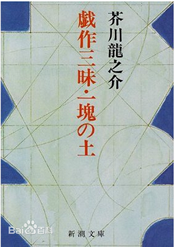
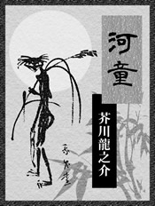
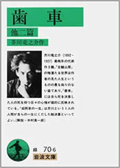

發表年代 |
中文名稱 |
日文名稱 |
1914年 |
老年 |
老年 |
1915年 |
羅生門 |
羅生門 |
1916年 |
鼻子 |
鼻 |
芋粥 |
芋粥 |
菸草與悪魔 |
菸草と悪魔 |
1917年 |
戲作三昧  |
戱作三昧 |
1918年 |
蜘蛛之絲 |
蜘蛛の糸 |
地獄變 |
地獄変 |
邪宗門 |
邪宗門 |
1919年 |
魔法 |
魔術 |
1920年 |
南京的基督 |
南京の基督 |
杜子春 |
杜子春 |
火神 |
アグニの神 |
1921年 |
竹林中 |
藪の中 |
1922年 |
軌道列車 |
トロッコ |
1927年 |
玄鶴山房 |
玄鶴山房 |
侏儒的話 |
侏儒の言葉 |
文藝的、太文藝的 |
文芸的な、あまりに文芸的 |
河童  |
河童 |
齒輪  |
歯車 |
某阿呆的一生 |
或る阿呆の一生 |
西方的人 |
西方の人 |
文學風格與風格演變
一．主題風格。先芥川龍之介的作平品大多數是以短篇小說為主，並且他的小說也是從歷史題材這一方面開始著手的，然後才轉向於明治文明開化題材。在他後期的時候則轉向於寫現實題材。
二．懷疑主義。因為芥川龍之介本身就是一位帶有懷疑主義色彩的作家，所以在他的作品中，自然就滲透著他的懷疑主義態度。並且還在小說中，呈現了他對宗教、死亡、人性的矛盾和分裂的態度，從而體現了他的懷疑主義的傾向。
三．宗教題材。芥川龍之介眾多的作品之中，關於基督教題材可以說是芥川龍之介作品中的一個重要分類，可以看得出來，作者是有一定的基督教文化情結的。
四．利己主義。他的作品中，不論是歷史題材，還是現實題材，他都在作品中展露了他對利己主義的披露，以及揭露利己主義是現實丑感的發源，也是人性醜惡的體現。
五．死亡意識。我亡與芥川龍之介的創作存在著密切的聯繫，從小就目睹母親去世的經歷，激發了他對人對己的悲劇處境的一個認識，並且還將這一認識通過小說的形式展現在讀者的面前。
芥川龍之介的早期作品以歷史小說爲主，藉由古典指出社會之中的醜惡。
分別取材於封建王朝的人和事：根據古代故事改編的〈羅生門〉、〈鼻子〉，揭開在社會中橫行的利己主義。
近代天主教對於日本的傳教活動：〈菸草與魔鬼〉、〈信徒之死〉。中國古代傳說：〈女體〉、〈杜子春〉。
描述江戶時代的社會現象：〈戲作三昧〉藉由主角瀧澤馬琴的內心描繪，闡述作者超然於醜惡事實之外的處事態度。
明治維新後資本主義上升的社會：諷刺明治思想家鼓吹的武士道精神，如〈手捐〉。
十月革命之後，日本無產階級文學興起，芥川因受到時代的影響，開始注重寫反映現實的文學作品。歌頌純樸善良的農村姑娘，對比小資產階級知識份子的頹廢消沉〈桔子〉，述說農村與人之間關係的〈一塊地〉和批判軍國主義，對下層士兵寄予同情〈猴子〉、〈三個寶〉。
晚期的作品，反映了他對貧富懸殊的社會現實的幻滅感。通過〈玄鶴山房〉裡的老畫家之死，揭開一般家庭內部會有的糾葛，以此反映人生的慘淡和絕望心情，暗示著舊事物的衰敗死亡以及新時代的來臨。在寫這本書時，芥川龍之介病情惡化，當時日本的社會形勢也向右偏，言論自由消失，芥川同時萌生自殺的念頭，這使得之後的作品更加陰沉壓抑。
文學評價與後世影響
魯迅：「所用的主題最多的是希望之後的不安，或者正不安時之心情。」
室生犀星：「這個作家好像從書籍之間變出來的，在世上只活了三十幾年，談笑一通，馬上又隱身於自己出來的書籍之間，不再出來。」
吉田精一：「從他的文學中，可以看作是大正時期小市民知識階級層的良心、感覺、神經等經過提純而獲得的結晶。可一會所他的創作是他的學識與才華的一個化身。」
中村真一郎：「在日本近代文學史上開拓了一個不曾有過的領域。」
高木卓：「雖然說從古典中屈才是毋庸置疑的，但是從芥川的作品來看，他的小說多是以歷史小說為主，並且基本上全部仰賴於以《今昔物語》為主的眾多古典題材。所以從這個方面來說，芥川缺少一些創意和想像力，並且在文章結構上面還是有一定的不足之處。」
1935年芥川龍之介自殺去世8年後，他的畢生好友菊池寬設立了以他的名字命名的文學新人獎「芥川賞」，現已成為日本最重要文學獎之一，與「直木賞」齊名，作為獎勵新進純文學作家的重要獎項之一，影響深遠。
1950年，日本著名導演黑澤明，將芥川的作品《竹林中》與《羅生門》合而為一，改編為電影《羅生門》，在國際上獲得包括坎城影展金棕櫚獎在內的多個大獎，使日本電影走向世界。此後，「羅生門」更成為華語地區對於撲朔迷離的、各方說法不一的事件的代名詞。